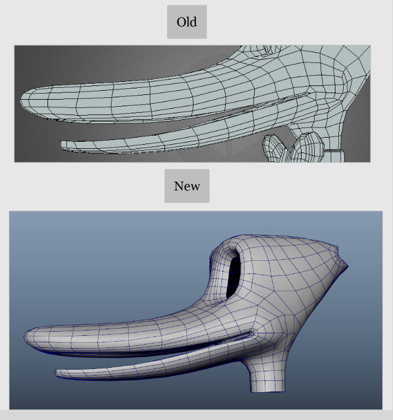

Journal one
Jan 12 2026 to Jan 26 2026
Duck model edits
I made changes to my duck model in preparation to begin rigging it.
- Started by modifying the mouth loops to fix some smoothing issues, and to hopefully make it deform better. This took a while, topology can be tough to organize nicely.

- Edited the eye loops, making the top and bottom vert counts the same (Yvonne's suggestion). I wanted to make sure a full blink was possible with the character's oval shaped eyes, so I created a test blend shape and it worked well.

- Angled the legs to be more straight forward.
- Added a lattice for the eyes, the base eye mesh is now a perfect circle.
Autorigging research
I didn't know anything really about the "modular" type of process that you can create for your rigs, so reading up on that was cool. Any way to avoid working destructively, or repeating myself a lot is warmly welcomed.
I poked around the official documentation and quick start guides, and found the mGear youtube channel. I've been watching along and taking some notes on the mGear Basics: Introduction to Shifter Modular Rigging System playlist.
Journal website
I played with Blogger initially, but I've really gotten into using Markdown to keep notes. I wanted an easy way to turn a collection of .md files into a website, and luckily the actual documentation website for mGear led me in the right direction.
It uses a site generator called MkDocs that I figured I'd try using.
It required:
- Working in the command line (bash)
- Working with Git, and GitHub Pages to host my website
- Creating a Python venv (virtual environment) and installing packages into it
Some of that was new, and fun to learn a bit about. It's not really related to the main project, I know, but I'll mention it here since it's something I did.